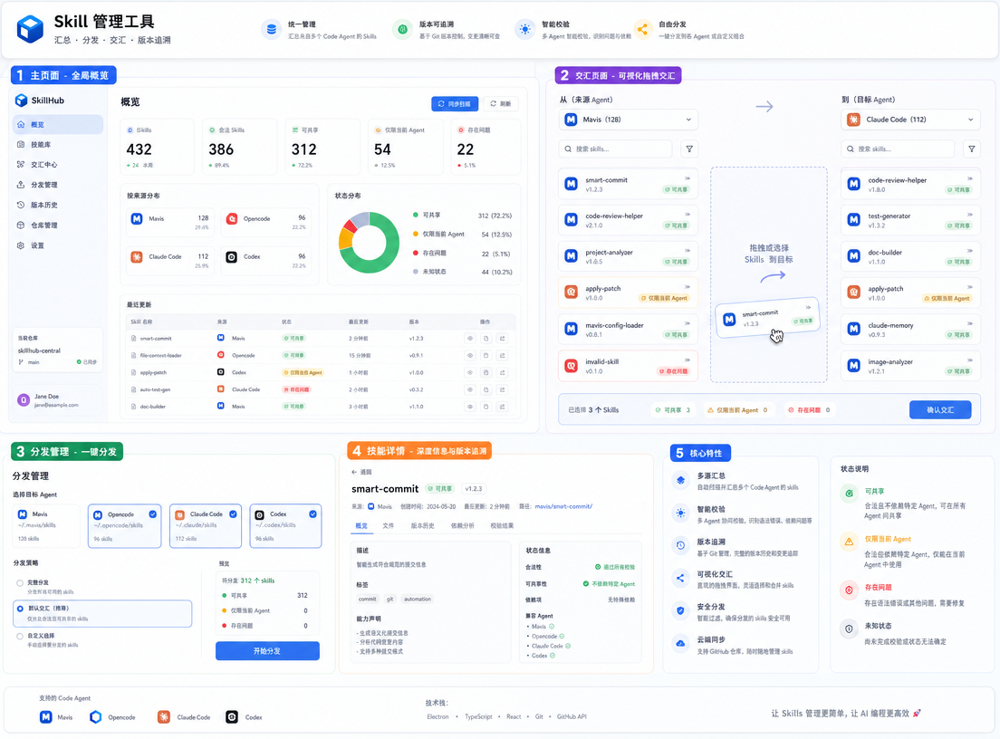

一句话结论
SkillHub 的北极星不是“做一个漂亮控制台”，而是让用户在本机和远程 Linux 环境中，可靠地发现、汇总、审核、追溯、交汇和分发多个 Code Agent 的 skills。
Web UI 是可视化管理层；CLI 是完整产品能力的基础入口。所有危险写操作必须先展示源路径、目标路径、动作和影响范围，默认要求用户输入 y/N 确认；非交互环境必须显式传入确认参数。
原始需求复述
用户本机有多个 Code Agent，例如 Mavis、OpenCode、Codex、Claude Code，以及一个不完全归属于某个 Agent 的 .agents/skills 目录。它们各自维护 skills。用户经常需要找某个 skill，却发现它只存在于另一个 Agent 的目录里，还要手动找绝对路径、复制、安装，非常低效。
用户希望做一个管理 skills 的工具，让 skill 能被汇总、版本追溯、审核、交汇和分发。这个工具要支持 GitHub 仓库作为统一 Registry；要能加载已有 Registry；要能判断 skill 是否合法、是否依赖特定 Agent；还要用颜色或状态把可共享、仅限当前 Agent、存在问题等情况表达清楚。
产品原则
- CLI first。远程 Linux 环境没有 Web UI，CLI 必须完整可用。
- 真实内容，安全镜像。默认从真实 skill 复制到 mirror 后测试，不直接写真实目录。
- 显式确认。写入命令默认展示 source、target、action，然后要求
y/N。 - 可解释。用户必须知道 copy / overwrite / skip 是什么、为什么发生。
- 可追溯。Registry 用 Git 管理，manifest、review、prompt 和 skill 原样包可追踪。
- 审核不静默。调用 Codex、Claude Code、OpenCode、Mavis 做审核必须由用户选择并确认。
- CLI 英文。CLI 命令、help、输出默认英文；Web UI 可以多语言。
功能总表
| 功能 | 用户目标 | 输入 | 输出 | 确认点 |
|---|---|---|---|---|
| List | 列出当前 profile 可见 skills。 | Agent sources、profile、过滤条件。 | skills 列表、状态、来源路径。 | 只读，无需确认。 |
| Registry Import | 把扫描到的 skills 汇总到统一 Registry。 | 当前 scan/list 结果。 | 原样 skill 包、registry/skills.json。 | 写 Registry 前确认。 |
| Review | 判断 skill 是否合法、可共享、agent-bound 或 unsafe。 | Registry skill、规则或本机 Code Agent。 | review JSON、摘要、证据。 | 选择审核器后确认。 |
| Copy | 从 A Agent 复制选中 skills 到 B Agent。 | 来源 Agent、目标 Agent、skill ids。 | copy / overwrite / skip 预览和执行结果。 | 写目标前确认。 |
| Distribute | 从 Registry 批量分发到多个 Agent。 | Registry skills、目标 Agent 列表。 | 批量复制预览和执行结果。 | 写目标前确认。 |
| Repo Sync | 把 Registry 同步到 GitHub。 | registry repo、remote、commit message。 | Git commit、push/pull 结果。 | push 前确认。 |
| Profile / Config | 管理 source/target 路径和运行环境。 | 配置文件、XDG / 环境变量。 | active profile、路径、策略。 | 切换到 local 或改写路径前确认。 |
Web UI 草图解读

图中的功能块
| 区域 | 原始意图 | 需要补齐的工程逻辑 |
|---|---|---|
| 总览 | 看所有来源的 skills 数量、状态和最近变化。 | 统计必须跟当前筛选范围一致；列表可滚动；选择 skill 后要出现下一步。 |
| 交互页面 / 可视化交汇 | 从来源 Agent 选择 skills，复制到目标 Agent。 | 必须展示来源/目标绝对路径；必须有预览交汇复制和确认复制按钮。 |
| 分发管理 | 选择目标 Agent 并批量分发。 | 文案要说明 Registry -> 多目标；copy/overwrite/skip 要解释原因。 |
| 技能详情 | 看 skill 的描述、来源、状态、依赖和版本。 | 要展示 frontmatter、review 结果、证据、路径和可执行动作。 |
| 状态特性 / 图例 | 用颜色区分可共享、仅限 Agent、存在问题、未知。 | 状态必须来自审核和规则，不是 UI 静态标签。 |
| 仓库管理 | 管理 Registry 和 GitHub。 | 导入、commit、push、pull、加载已有 repo 都要可解释。 |
图中“生成计划”“执行分发”这类内部工程语义，在最终产品里必须转成用户能理解的动作，例如“预览复制结果”和“确认复制到目标 Agent”。
CLI 优先设计
产品名 linka-skillhub 过长。建议主命令为 lsh，长命令 linka-skillhub 保留为别名。CLI 完全使用英文。
lsh list
lsh registry import
lsh registry list
lsh registry show <skill>
lsh registry review --reviewer rules --language zh
lsh copy preview --from mavis --to codex --skill smart-commit
lsh copy apply --from mavis --to codex --skill smart-commit
lsh distribute preview --target codex,claude --skill smart-commit
lsh distribute apply --target codex,claude --skill smart-commit
lsh repo status
lsh repo push --message "feat: update skills"
lsh config list
lsh profile show写操作确认
交互模式下，写操作默认展示路径和动作，并要求输入 y/N：
Source: /abs/source/path
Target: /abs/target/path
Action: copy 1, overwrite 0, skip 0
Continue? [y/N]非交互环境不能等待输入，必须要求显式确认，例如 --yes。真实 local profile 写入需要更强提示。
关键流程
List / Import
list sources→parse skills→show status→import to registry
Review
select skills→choose reviewer→confirm→write review
Copy A -> B
choose source→choose target→preview→y/N→copy
Distribute Registry -> many targets
select registry skills→choose targets→preview→y/N→copy with backups
边界和不做什么
- 不默认写真实 Agent skills 目录。
- 不静默调用本机 Code Agent 审核。
- 不把
.agents/skills硬归属给 OpenCode；它是 shared source。 - 不把 Web UI 当成唯一产品入口；CLI 必须完整可用。
- 不在 CLI 中使用模糊文案，例如裸露的 “generate plan / execute plan” 而不解释。
- 不让前端或命令参数传入可执行路径绕过 profile 安全边界。
下一步
- 先冻结 CLI v1 命令树和输出格式。
- 把当前
scan命令迁移为list，保留兼容别名。 - 实现
copy preview/apply，作为交汇的 CLI 原型。 - 补写所有写操作的
y/N确认和非交互--yes策略。 - 再让 Web UI 调用同一套 core workflow，而不是单独设计一套流程。